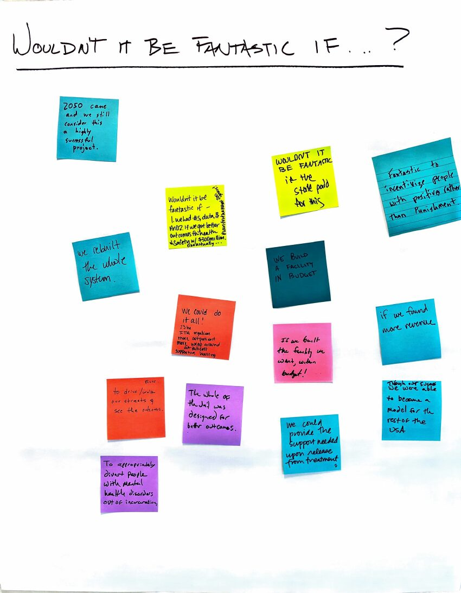
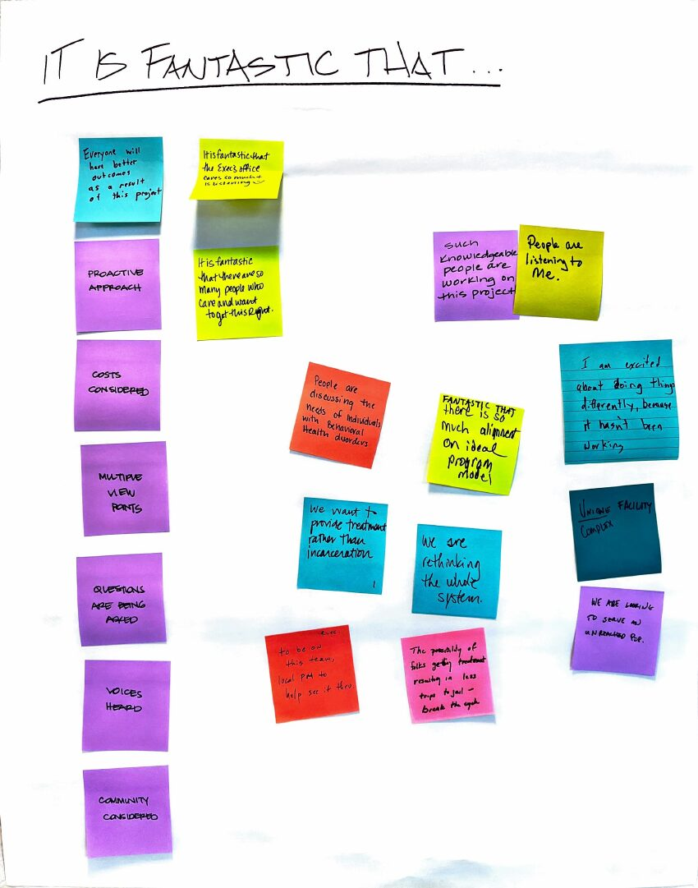
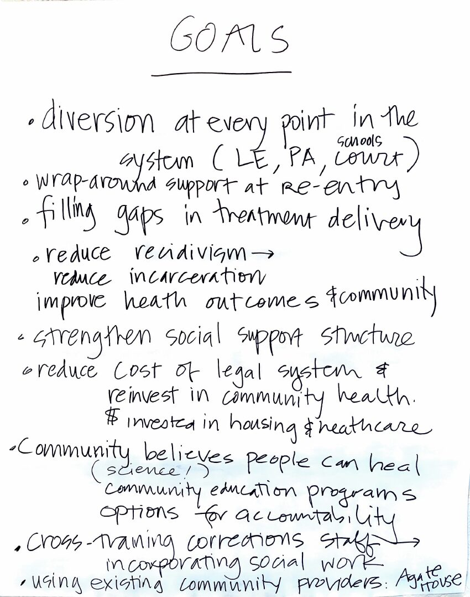
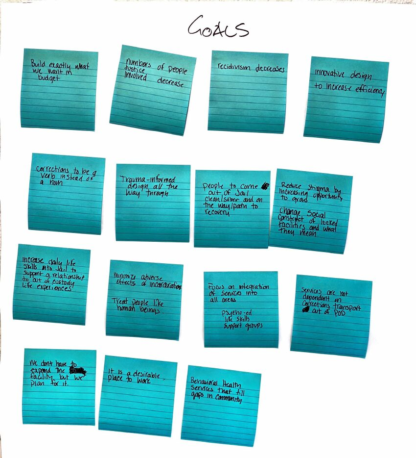
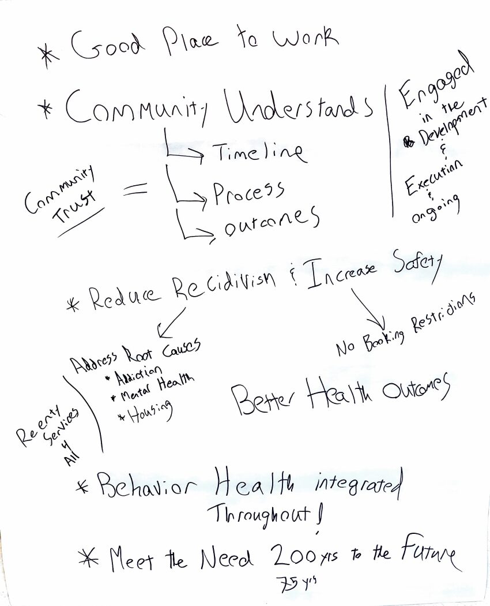
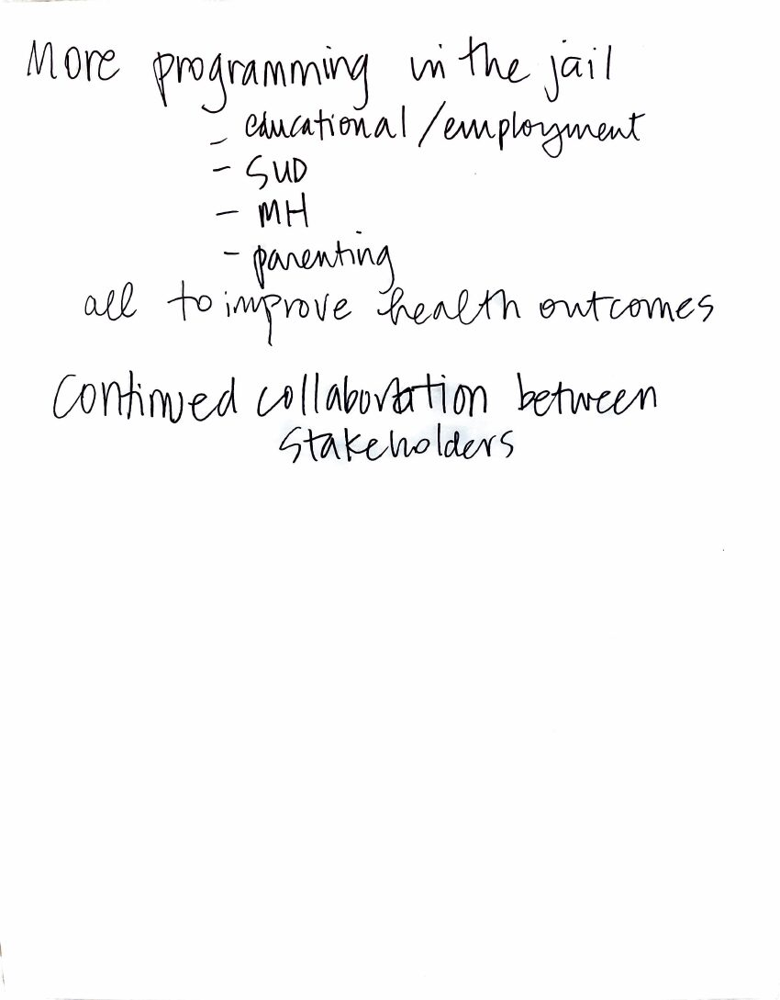
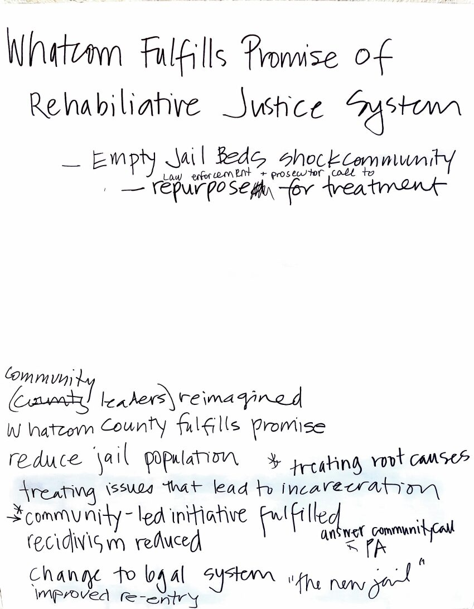
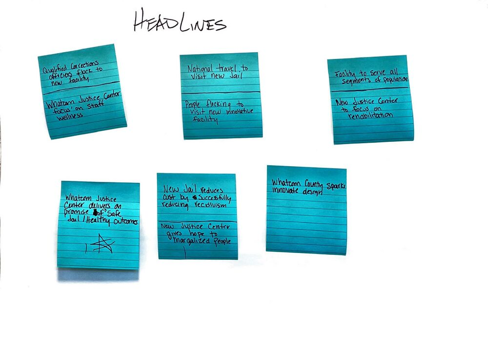
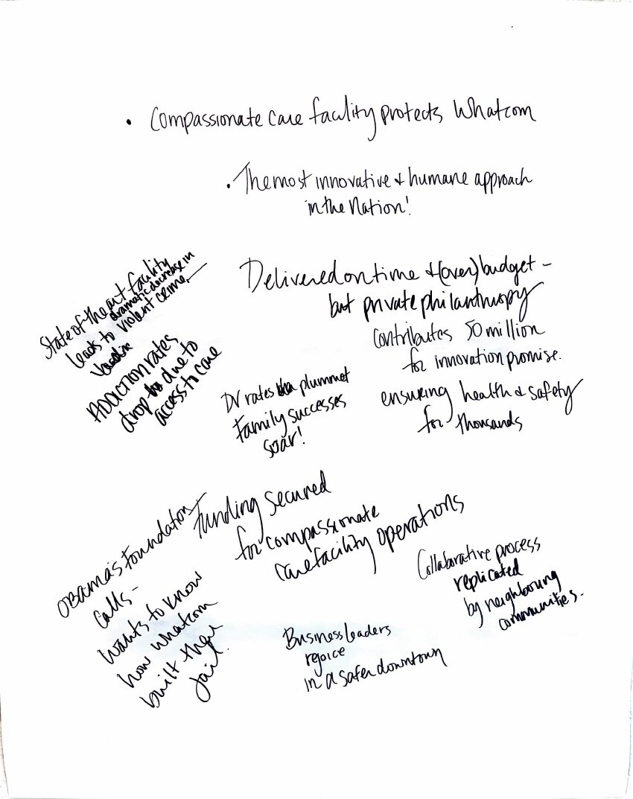

In the early phase of work on the Whatcom County Justice Project, a room full of community members, county staff, providers, and partners was asked to imagine success. They covered the walls with sticky notes. They wrote the newspaper headlines they hoped to read. This is what they said, what it asks of the choices now in front of us, and the futures still very much within reach.
The exercise asked four questions, each one inviting participants to think generously about what could be. Read together now, the flip charts are a remarkable record of community care, expertise, and ambition.
Participants were asked: what would be fantastic if it happened? What is already fantastic that is happening? What goals would define success? And what headlines would the paper carry if the project worked? The format gave everyone a voice. Sticky notes were posted in clusters. Phrases were written on flip charts. Nothing required reconciliation between competing ideas. The room could hold many visions at once, and it did.
The artifacts below are the actual record of that day. Click any image to see it full size.









Across all four exercises, the same commitments appeared on different sheets, in different handwriting, in different colors of ink. They were not slogans. They were practical statements of what success would look like.
Law enforcement, prosecution, courts, and schools. Not a single program. A property of the whole system.
Re-entry support, gaps in treatment filled, dollars in housing and healthcare, behavioral health that meets people in the community.
Trauma-informed all the way through. Corrections as a verb, not a noun. Integrated services. A desirable place to work.
Trust equals understanding of timeline, process, and outcomes, sustained through engaged development, execution, and ongoing collaboration.
"Meet the need 75 to 200 years to the future." The room was not thinking about a single capital decision. It was thinking about defensibility across generations.
The notes themselves are worth reading at their original scale. A small sample, in the room's own words:
The exercise format invited generosity. It did not require participants to reconcile competing aspirations. Reading the artifacts now, two distinct theories of success appear alongside each other, each one a sincere expression of what success would mean.
These are not opposing camps. Most participants held both at once. But they are different theories, and they imply different sizing decisions, different operating commitments, and different capital allocations between the jail and the Behavioral Care Center. Naming them clearly is a way of honoring the full ambition of the room.
Success is felt inside the building. The jail itself is humane, well-designed, integrated with care.
Success is felt across the community. Fewer people enter the system in the first place.
Both pathways were on the wall. The headline that reads "Qualified corrections officers flock to new facility" and the headline that reads "Empty jail beds shock community" were written by people in the same room at the same exercise. Both express care for what could be true about this community.
The collective vision the room described, read most generously, is the one in which Pathway A and Pathway B constrain each other in productive ways: a better facility because it is smaller, smaller because the upstream investments are real, more humane because it is not asked to do work that should never have been its work alone. This is the vision the rest of this reflection treats as the convergent one.
It is also worth noting whose voices were less represented at the exercise. The artifacts include relatively little about custodial security as a primary value, relatively little about the perspectives of crime victims and their families, and relatively little about the views of law enforcement leadership outside the visioning frame. A more complete picture of community preference includes those voices. This reflection synthesizes what the room said, with awareness that the room was not the whole community.
A headline forces a verb and a subject. When the room's hopes are read as newspaper front pages, the choices ahead come into sharper focus.
The exercise asked participants to write the headlines they hoped to see if the project succeeded. Below is a curated reproduction of what was written, followed by two possible front pages from a decade out. Use the year toggle to compare them.
The 2036 projections are not predictions. They are an honest reading of where current trajectories lead, and where the choices now on the County's calendar can redirect them. Every headline in the "Both Pathways" scenario is still possible. Each one requires specific decisions on specific dates.
Every aspiration in the exercise implies a budget decision now visible on the calendar. None of these choices is abstract. Each one is a place where the room's two pathways meet, and the convergent vision becomes either more reachable or more deferred.
The room asked for diversion at every point in the system and for a facility that need not be expanded. The bed count selected is the test of whether the stated preference for upstream investment is honored in the building itself. The asymmetry between escalation costs and the cost of building the wrong size deserves visibility in the public record alongside the cost of delay.
The room described behavioral health as integrated across the system and as filling gaps in the community. The BCC's confirmed $12.58 million annual operating cost and identified baseline funding gap make this the most concrete place where Pathway B is either funded or deferred. Strong operating commitments here turn the vision into infrastructure.
The Interlocal Agreement's 50% floor for community behavioral health investment is the binding mechanism that connects the room's reinvestment vision to dollars. Its disposition in the coming renegotiation is one of the most consequential decisions ahead. A 50% Recovery Working Group built with lived experience and community subject matter expertise is the practical instrument for keeping faith with the vision.
The room asked for people to leave on a path to recovery. That goal is incompatible with treating average length of stay as a demographic constant. The pending ADP / ALOS Reduction Workgroup, properly resourced and seated, is where the room's programmatic ambition meets operational reality.
The room's equation was clear and exacting. Trust is built through engaged development, execution, and ongoing collaboration, not through a finished announcement. Public dashboards, source-cited data, open minutes, and the disclosure of analytical assumptions are the operational form of what the room called trust.
If every sticky note is taken seriously, and the two pathways are allowed to constrain each other, the convergent vision the room described comes into focus.
Whatcom County replaces an unsafe and obsolete jail with a thoughtfully sized, trauma-informed facility in a community where diversion, behavioral health treatment, and housing investments are reducing the demand for incarceration year over year. The Behavioral Care Center opens with a funded operating model, integrates with the community continuum of care, and serves populations who would otherwise have entered the jail.
The fifty-percent floor for community behavioral health investment holds, and the community can see, year by year, where the money is going and what it is doing. Bookings decline as diversion matures. Recidivism declines as re-entry is resourced for everyone. Length of stay shortens because the system is faster, more humane, and more accountable, not because policy changes have moved the underlying need somewhere less visible.
The facility is a desirable place to work because the people who work there are not asked to be the community's only intervention. Whatcom is studied not only because of how the building was designed, but because of the system around it. In 2050, the project is still considered a success because the community continued to invest in the upstream conditions that made the facility's size adequate.
These two notes, written on the same wall, are not in tension. They are two parts of one ambition. The work ahead is to make sure both of them remain true a decade from now.
Eighteen months ago, a group of people who care about this community wrote down what they wanted. They wanted a smaller footprint and a better building. They wanted treatment in the community and treatment in the jail. They wanted empty beds and full programs. They wanted, in the end, two things at once, and they did not have to choose between them in the room.
The choices ahead are where those two pathways become one. The capital budget is one such choice. The renegotiation of the Interlocal Agreement will be another. The operating commitments for the Behavioral Care Center, the resourcing of the working groups, the response to the next forecast revision, the disposition of the fifty-percent floor: each one is a place where the room's full ambition is either kept or quietly narrowed.
The most useful thing the exercise produced was not a vision statement. It was a record of what was said when the choices had not yet been made. That record is now a benchmark. It is worth reading, decision by decision, against the headlines the room wrote.